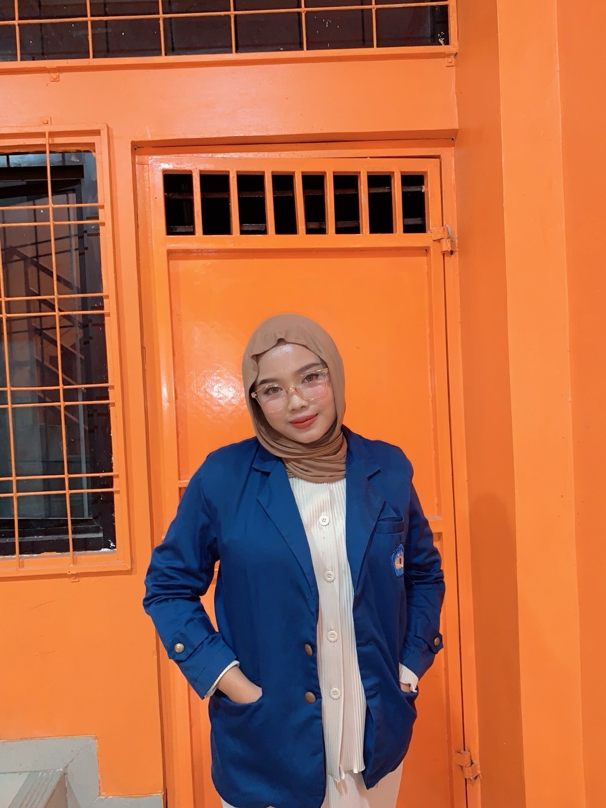

Elfianisya Zaharani Wibowo
NPM 2313034064
Project Overview
Sistem Informasi Geografis Sekolah
Aplikasi WebGIS ini dirancang sebagai platform visualisasi spasial interaktif untuk memetakan persebaran institusi pendidikan (SMA Negeri) di Kabupaten Klaten. Sistem dikembangkan untuk mempermudah analisis spasial aksesibilitas dan zonasi pendidikan wilayah.
Mata Kuliah
Perencanaan WebGIS
Fokus Analisis
Geospasial Pendidikan
Instansi
Universitas Lampung